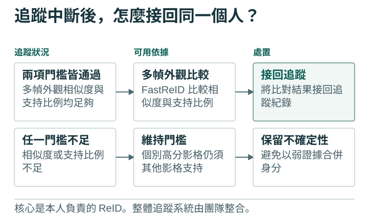

畢業專題
Horus 多鏡頭人物追蹤
追蹤中斷後，如何認出同一個人？我負責把人物外觀比對接進團隊的追蹤系統。
- 負責範圍
- 負責人物再辨識（person ReID），整合 FastReID 外觀特徵、多張取樣及雙門檻判斷，串接待比對任務與追蹤紀錄更新。
- 成果與狀態
- 團隊完成多鏡頭辨識系統與遮蔽、擦肩、離開後再出現等情境測試，獲 2020 年東吳大學畢業專題第一名；即時運作仍有限制。
- 紀錄時間
- 2020 年畢業專題紀錄
情境與目標
人物轉身、被遮住，或離開鏡頭再出現時，連續追蹤可能換掉原本的編號；臉部也不一定清楚可見。團隊整合追蹤、人臉辨識與行人重新識別，嘗試將分散的追蹤片段接起來。

核心是本人負責的 ReID。整體追蹤系統由團隊整合。（點圖放大） 團隊原始測試情境：離開畫面後再出現；本人負責 ReID 比對與流程整合。（點圖放大）
團隊原始測試情境：離開畫面後再出現；本人負責 ReID 比對與流程整合。（點圖放大）系統架構與流程
架構說明
- 輸入
- 多鏡頭追蹤片段，以及不同時間與角度的人物影像。
- 處理方式
- 本人整合FastReID特徵，多張取樣交叉比較相似度與支持比例，再以佇列接回追蹤紀錄。
- 產出
- 團隊多鏡頭人物追蹤與辨識展示，畢業專題第一名。
流程圖
 本人主責 ReID；FastReID 為第三方，追蹤、人臉辨識與完整系統為團隊。情境展示不代表已解決誤認或即時性。（點圖放大）
本人主責 ReID；FastReID 為第三方，追蹤、人臉辨識與完整系統為團隊。情境展示不代表已解決誤認或即時性。（點圖放大）關鍵設計取捨
一張照片不可靠，就看多張照片的共同支持
挑戰遮蔽、轉身與角度變化，使單張外觀比對不足以支持身分連結。
方法與取捨本人設計追蹤片段取樣、多張交叉比對及相似度／支持比例雙門檻。 以FastReID特徵與cosine similarity計算，再依兩層條件整理匹配結果。
結果將外觀比對轉成可調整、可追查的判斷流程；不稱已完全解決遮蔽或誤認。
讓ReID結果能接回追蹤系統
挑戰追蹤片段持續產生，需要知道何時比對、何時完成與更新哪筆紀錄。
方法與取捨本人以佇列與狀態流程管理待比對追蹤紀錄。 串接第一／第二檢查、timeout、finished／update及DB更新交接。
結果ReID能進入團隊系統流程；整體團隊完成情境展示與畢業專題第一名，即時性仍有限制。
成果與驗證範圍
實際產出
團隊完成多鏡頭辨識系統與遮蔽、擦肩、離開後再出現等情境測試，獲 2020 年東吳大學畢業專題第一名；即時運作仍有限制。
驗證與限制
ReID 採用第三方 FastReID，整體系統由團隊整合；遮蔽、誤認及即時性仍有適用限制。
- 競賽規模
- 東吳大學畢業專題評選；未取得當年公開總隊數及人數。
- 參賽成果
- 團隊獲畢業專題第一名。
觀看團隊 Demo（YouTube） · 團隊程式與操作說明